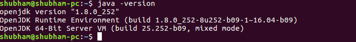
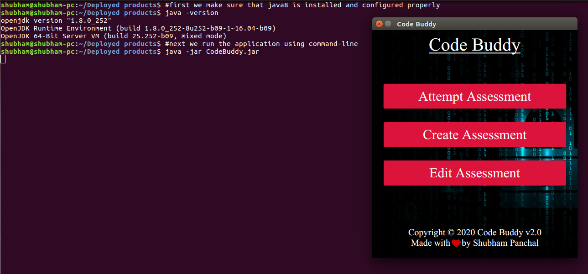

Code Buddy
Code Buddy is a simple desktop application designed for conducting coding assessments!
Features of Code Buddy
- No registration required
- Works completely offline
- Support for multiple programming languages i.e. C, C++, Java and Python
- Automatic testing against pre-defined test cases
- Rich-code editor with syntax highlighting for multiple programming languages
- and many more...
Dependency
You need to first install JDK(Java Development Kit) or JRE(Java Runtime Environment) version 8 in order to run this application
You can download the JDK8 from
here according to your operating system
You can verify your installation with following command
java -version
The following image shows the output for Ubutnu-16.04

Download and Installation
Download CodeBuddy-v2.0 JAR
Download CodeBuddy-v1.1 JAR
Download CodeBuddy-v1.0 JAR
Once you have installed JDK8 and configured the path variables then you can run the application in either way:
- Double click on the application
- Run the command java -jar CodeBuddy.jar
If your system do not give execution permission then you can change the permissions of the file and make it executable
The following snapshot shows how to run this application via command-line

Release notes for CodeBuddy-v2.0
Following are the features added in this release
- Added support for more than one problem in single assessment
- Added rich text-editor for instructors
- Added rich code-editor with syntax highlighting
- Allowed editing for previously created assessments
- Added support for maintaining list of submissions and rollbacks
- Enhanced GUI
- Improved code execution process
- Improved error-handling mechanism
Following are the bugs to be fixed in next release
- Doesn't select font-family in editor by default and thus forces the instructors to select a font-family before writing the problem statement (throws Exception otherwise)
- Fails to execute user's code if path to application contains white-spaces
Release notes for CodeBuddy-v1.1
- Added support for command line arguments per test case
- Added support for time limit on program
- Fixed other minor bugs
Feedback/Suggestion
We would love to listen to your feedback. You can reach to us via:
- Email: shubhampanchal9773@gmail.com, panchalprogrammingacademy@gmail.com
- Mobile: +91 9773669462
- WhatsApp: +91 9773669462
Copyright © 2020 - Code Buddy | Panchal Programming Academy
MIT LICENSE